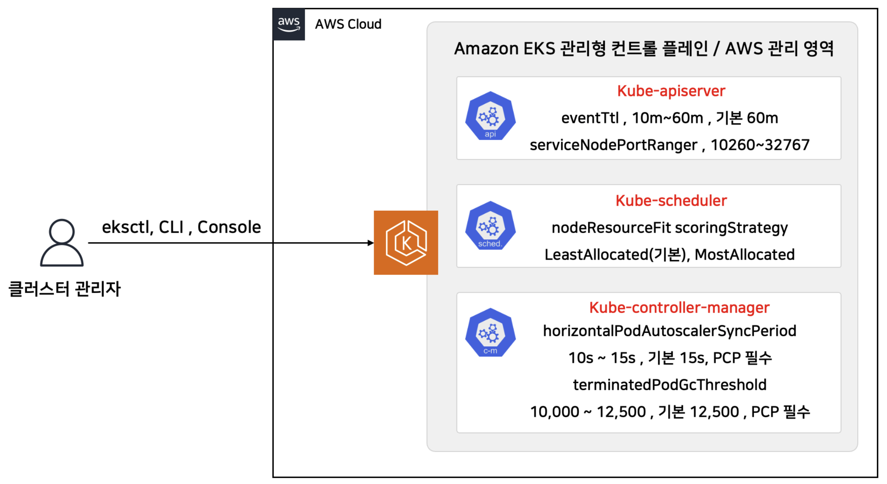

EKS가 관리하던 컨트롤 플레인 파라미터 5가지를 고객이 설정하게 되면서 무엇이 달라지고 무엇을 조심해야 하는지 다룹니다. EKS는 검증한 범위 안의 값만 받고 HPA 동기화 주기와 종료 파드 GC 임계값에는 Provisioned Control Plane이 필수입니다. 기본값이 곧 안전값이므로 목적이 명확할 때만 조정하고 조정 전후로 DescribeClusterVersions와 describe-cluster로 확인합니다.This post covers what changes and what to watch for now that customers can set five control plane parameters that EKS used to manage. EKS accepts only values within ranges it has validated, and the HPA sync period and the terminated Pod GC threshold require Provisioned Control Plane. Because the defaults are the safe values, tune only when the purpose is clear, and check with DescribeClusterVersions and describe-cluster before and after tuning.
EKS 노드에 파드(Pod)를 더 밀도 있게 채워서 컴퓨트 비용을 줄이고 싶은데, 스케줄러 설정에는 손댈 방법이 없어 아쉬웠던 적이 있으신가요? 대규모 이벤트로 트래픽이 많아지는 순간 오토스케일링이 조금 더 빨리 반응해 주기를 바랐던 경험은 어떠신가요? 지금까지 Amazon EKS에서 이런 요구를 해결하기가 쉽지 않았습니다. kube-scheduler와 kube-apiserver 같은 컴포넌트의 구성이 EKS 컨트롤 플레인 고유의 영역이었기 때문입니다.
2026년 8월 12일, Amazon EKS는 고급 Kubernetes 컨트롤 플레인 구성(Advanced Kubernetes control plane configuration) 기능을 출시했습니다. 그동안 EKS가 관리해 온 kube-scheduler, kube-controller-manager, kube-apiserver의 파라미터 5가지를 이제 고객이 직접 설정할 수 있습니다. 이 글에서는 파라미터별 동작 방식과 조정 효과를 살펴봅니다. 함께 따라오는 고려사항과 운영 규칙도 공식 문서 기준으로 정리합니다.
01
Amazon EKS가 관리하는 컨트롤 플레인은 클러스터의 결정을 내리는 관리 계층입니다. API 서버, 스케줄러, 컨트롤러 매니저로 구성됩니다. 이번 기능으로 설정할 수 있게 된 것은 이 세 컴포넌트에 걸친 파라미터 5가지입니다. 아래 표에서 눈여겨볼 부분은 세 곳입니다. 어느 컴포넌트의 어떤 파라미터인지, 허용 범위가 어디까지인지, 그리고 Provisioned Control Plane(컨트롤 플레인 용량을 사전에 할당하는 모드, 이하 PCP) 요구 여부입니다. PCP가 필요한 것은 kube-controller-manager의 파라미터 두 가지뿐입니다.
| 컴포넌트 | 파라미터 | 허용 범위 | 기본값 | PCP 필요 |
|---|---|---|---|---|
| kube-scheduler | nodeResourcesFit.scoringStrategy | LeastAllocated, MostAllocated | LeastAllocated (cpu:1, memory:1) | 아니요 |
| kube-controller-manager | horizontalPodAutoscalerSyncPeriod | 10s ~ 15s | 15s | 예 |
| kube-controller-manager | terminatedPodGcThreshold | 10000 ~ 12500 | 12500 | 예 |
| kube-apiserver | eventTtl | 10m ~ 60m | 60m | 아니요 |
| kube-apiserver | serviceNodePortRange | minPort/maxPort 각 10260 ~ 32767 | 30000 ~ 32767 | 아니요 |
표 1. 설정 가능한 컨트롤 플레인 파라미터 5가지
설정 방식은 기존 API의 확장입니다. CreateCluster와 UpdateClusterConfig 오퍼레이션에 컴포넌트별 파라미터가 추가되었습니다. AWS Management Console, AWS CLI, AWS SDK, AWS CloudFormation에서 같은 방식으로 사용합니다. 별도의 신규 API를 학습할 필요는 없습니다.

개방과 함께 통제 장치 3가지가 따라옵니다. 각 파라미터는 EKS가 검증한 범위(validated range) 안의 값만 받습니다. 모든 변경은 AWS CloudTrail에 기록됩니다. 설정은 항상 클러스터 전역으로 적용됩니다. 또한 네임스페이스나 워크로드 단위로는 적용할 수 없습니다.
지원 대상은 Kubernetes 1.31 이상을 실행하는 신규 및 기존 클러스터입니다. Amazon EKS를 제공하는 모든 AWS 상용 리전에서 지원하며 추가 요금은 없습니다. 단 표의 마지막 열이 보여주듯 kube-controller-manager의 파라미터 두 가지는 PCP가 필수입니다. PCP에는 티어별 시간당 요금이 부과되며 요금의 자세한 내용은 Amazon EKS 요금 페이지를 참고하시기 바랍니다.
한 가지 분명히 해 둘 점이 있습니다. 기능 출시 자체는 기존 클러스터의 동작을 전혀 바꾸지 않습니다. 파라미터를 명시적으로 설정하기 전까지 모든 클러스터는 기본값으로 동작합니다. 기능 전반의 자세한 내용은 Amazon EKS 사용 설명서의 Advanced Kubernetes control plane configuration 문서에 있습니다.
02
파라미터 5가지는 숫자만 보면 작은 허용 범위로 보입니다. 하지만 관리형 Kubernetes에서 고객과 서비스 제공자를 나누던 통제 경계가 컨트롤 플레인 안쪽으로 움직였다는 점에서 의미가 있습니다.
직접 설치한 Kubernetes에서는 kube-scheduler나 kube-apiserver의 플래그를 운영자가 정합니다. EKS 같은 관리형 서비스에서는 그 결정권이 서비스 쪽에 있었습니다. EKS가 컨트롤 플레인의 가용성을 책임지는 대신 컴포넌트 구성도 EKS가 정하는 구조였습니다. 노드를 채워 사용하는 MostAllocated 방식으로 컴퓨트 비용을 줄이고 싶어도 관리형 컨트롤 플레인의 스케줄러에는 손댈 방법이 없었습니다. 이번 기능에서는 그 요구를 관리형 서비스의 API 안으로 가져왔습니다.
다만 설계를 들여다보면 EKS가 무엇을 안정적으로 유지하려고 했는지도 알 수 있습니다. 컴포넌트 플래그 전체가 열린 것은 아닙니다. 개방 대상은 파라미터 5가지뿐이고 각각의 허용 폭도 좁습니다. HPA(Horizontal Pod Autoscaler) 동기화 주기는 10초에서 15초 사이 5초 폭입니다. eventTtl은 기본값 60분에서 줄이는 방향으로만 열려 있으며 종료 파드 GC 임계값도 기본값 12500에서 10000까지 줄이는 방향으로만 조정할 수 있습니다. serviceNodePortRange의 상한은 32767로 고정되어 있습니다. 스케줄러 전략도 같은 패턴입니다. 업스트림 Kubernetes의 scoringStrategy 가운데 RequestedToCapacityRatio는 지원하지 않습니다. LeastAllocated와 MostAllocated 두 가지만 받습니다. 검증된 범위 안에서만 값을 받는 이 구조는 컨트롤 플레인의 안정성 책임을 EKS가 계속 지겠다는 설계로 읽힙니다. PCP 요건에서도 같은 원칙이 보입니다. AWS 문서는 컨트롤 플레인 자원 소비를 크게 늘리는 파라미터를 용량이 사전 할당된 클러스터로 제한한다고 명시합니다. kube-controller-manager의 파라미터 두 가지가 여기에 해당합니다.
표 1의 기본값과 허용 범위는 작성 시점의 Kubernetes 버전(EKS 1.31 이상) 기준이며 이후 버전에서 달라질 수 있습니다. AWS 문서가 버전별 기준으로 지정한 것은 DescribeClusterVersions API입니다. 버전마다 defaultValue와 constraints를 반환합니다. IaC나 자동화 코드에 기본값을 하드코딩하기보다는 이 API를 조회하는 것이 안전합니다.
03
각 파라미터마다 동작 원리, 조정할 가치가 있는 상황, 그리고 주의해야 할 고려사항 순서로 정리합니다.
스케줄러는 두 단계로 동작합니다. filter 단계에서 파드를 실행할 수 있는 노드를 골라냅니다. score 단계에서는 후보 노드마다 점수를 매겨 가장 높은 점수를 받은 노드에 파드를 배치합니다. 자원 확인과 점수화는 nodeResourcesFit 플러그인이 담당합니다. 이번에 열린 것은 그중 score 단계의 전략입니다. filter 단계의 동작은 그대로이므로, 어느 전략을 사용하든 노드에 들어갈 수 없는 파드가 배치되는 일은 없습니다. 스케줄러의 단계별 동작이 궁금하다면 Kubernetes 공식 문서의 Scheduling Framework를 참고하시기 바랍니다.
전략은 두 가지 가운데 선택합니다. 기본값인 LeastAllocated는 할당량이 적은 노드를 선호해 워크로드를 분산합니다. MostAllocated는 할당량이 많은 노드를 선호해 워크로드를 한곳으로 모읍니다. 워크로드가 집적되면 가볍게 사용되던 노드에 새 워크로드가 배치되지 않습니다. 그러면 통합(consolidation)을 지원하는 노드 풀이 그런 노드를 제거해 컴퓨트 비용을 줄일 수 있습니다.
scoringStrategy.resources에는 cpu, memory와 함께 가속기 3종을 1부터 100 사이의 가중치로 나열할 수 있습니다. 가속기 3종은 nvidia.com/gpu, aws.amazon.com/neuron, aws.amazon.com/neuroncore입니다. 가중치는 상대값입니다. cpu를 100, memory를 1로 설정해도 memory가 무시되는 것이 아니라 cpu가 100배 큰 비중으로 반영될 뿐입니다. 모든 후보 노드의 CPU 가용량이 같다면 사실상 memory가 배치를 결정합니다.
리소스를 나열할 때는 주의할 부분이 있습니다. resources 배열을 지정하면 나열한 리소스만 점수화 대상이 되고 뺀 리소스는 계산에서 완전히 제외됩니다. cpu 100만 지정하면 memory의 영향은 0이 됩니다. 영향력을 줄이되 계산에는 남겨 두고 싶은 리소스라면 낮은 가중치로라도 함께 나열해야 합니다.
가속기 가중치는 해당 리소스를 resources.requests로 선언한 파드에만 영향을 줍니다. 가속기 3종은 확장 리소스(extended resource)라서 디바이스 플러그인이 kubelet에 광고해야 점수화 대상이 됩니다. 드라이버만으로 노출된 리소스는 nodeResourcesFit에 보이지 않습니다. 동적 리소스 할당(Dynamic Resource Allocation, DRA)으로 관리되는 리소스는 별도 플러그인이 스케줄링하므로 이 점수화와는 무관합니다.
운영 관점에서 주의점도 있습니다. 전략 변경은 이후의 스케줄링에만 영향을 줍니다. 이미 실행 중인 파드를 옮기려면 축출(eviction)이나 재시작이 필요합니다. MostAllocated는 장애 영향 범위(blast radius)도 함께 집중시킨다는 점을 염두에 두어야 합니다. 노드나 가용 영역에 장애가 발생하면 동시에 영향받는 파드가 늘어납니다. 파드 생성과 삭제가 잦은 클러스터에서는 Pending 상태의 파드가 증가할 수 있습니다. 마지막으로 스케줄러와 노드 관리는 서로 다른 계층입니다. 이 설정은 EKS Auto Mode나 Karpenter가 노드를 프로비저닝하고 제거하는 방식을 바꾸지 않습니다. 두 기능을 결합했을 때의 동작은 직접 검증해 보시는 것을 권고합니다.
HPA 컨트롤러가 각 HorizontalPodAutoscaler 객체를 다시 계산하는 주기입니다. 컨트롤러는 메트릭을 조회해 원하는 레플리카 수를 정하고 수가 바뀌었으면 대상 워크로드를 업데이트합니다. 허용 범위는 10초에서 15초, 기본값은 15초입니다. 주기를 줄이면 부하가 늘어난 뒤 한 주기를 다 기다리지 않고 더 빨리 스케일링이 시작됩니다.
이 파라미터에 PCP가 필수인 데는 이유가 있습니다. 주기를 단축하면 클러스터의 모든 HPA 객체를 다시 계산하는 reconcile 작업의 빈도가 올라갑니다. 그만큼 API 서버 요청이 늘어납니다. reconcile 한 번에 최소 1개의 요청이 발생하고 레플리카 수가 바뀌면 2개가 더해집니다. PCP는 용량을 미리 할당하는 모드라 이 증가분을 흡수할 수 있으며 Standard 모드에서 설정하면 실패합니다. 또 15초에서 최소값인 10초로 줄이면 같은 큐를 처리할 시간이 짧아져, 지원 가능한 HPA 객체 수가 약 1/3 감소합니다. 조정 전에 kubectl get hpa --all-namespaces로 객체 수를 확인해 두는 것을 권장합니다.
특히 조심할 부분은 한도를 넘겨도 경보가 없다는 점입니다. EKS는 클러스터의 HPA 객체 수를 검증하지 않으므로, 지원 한도를 초과한 상태에서도 설정 변경은 성공합니다. 한도를 넘기면 일부 객체가 제때 reconcile되지 않는데, 경보도 Kubernetes 이벤트도 발생하지 않습니다. 증상은 “오토스케일링이 기대보다 느려짐”으로, 주기를 줄인 의도와 정반대입니다. 주기 단축 후 이 증상이 보이면 기본값인 15초로 되돌리는 것이 좋습니다.
PCP가 이 부하를 흡수하는 근거는 티어별로 사전 할당된 용량입니다. 아래 표에는 티어별 API 동시성과 함께, HPA 객체를 병렬로 처리하는 워커 수인 HPA sync concurrency를 정리했습니다. 업스트림 Kubernetes의 기본 워커 수가 5개인 점과 비교하면 PCP 티어는 10배에서 40배 높게 튜닝되어 있습니다.
| 티어 | API 요청 동시성 (seats) | 파드 스케줄링 (개/초) | 클러스터 DB 크기 (GB) | HPA sync concurrency |
|---|---|---|---|---|
| XL | 2,000 | 167 | 16 | 50 |
| 2XL | 4,000 | 283 | 16 | 100 |
| 4XL | 8,000 | 400 | 16 | 200 |
| 8XL | 16,000 | 400 | 16 | 200 |
표 2. Provisioned Control Plane 티어 사양(Kubernetes 1.34 이상)
티어 수치는 Kubernetes 버전에 따라 다릅니다. 1.30에서 1.33은 API 동시성이 더 낮으므로, 정확한 값은 DescribeClusterVersions로 조회하는 것이 안전합니다. 클러스터 데이터베이스(etcd) 크기는 전 티어 16GB로, Standard 모드가 지원하는 8GB보다 큽니다. 이 차이는 뒤에서 다룰 복귀 제약과 직접 연결됩니다. SLA도 달라집니다. Standard 모드가 5분 간격 측정으로 99.95%를 보장하는 반면, PCP는 1분 간격 측정으로 99.99%를 보장합니다. PCP 자체의 자세한 내용은 Amazon EKS Provisioned Control Plane 문서를 참고하시기 바랍니다.
컨트롤러 매니저의 파드 가비지 컬렉터(pod garbage collector)가 정리를 시작하는 기준선입니다. Succeeded나 Failed 단계로 종료된 파드가 클러스터에 이 개수를 넘겨 쌓이면 컬렉터가 삭제를 시작합니다. 허용 범위는 10000에서 12500, 기본값은 12500입니다. 소유자와 무관하게 모든 종료 파드가 집계 대상이지만 실제로는 Job과 CronJob 파드가 가장 큰 비중을 차지합니다. 완료된 파드 객체가 임계값 가까이 쌓이는 배치 중심 클러스터라면 임계값을 낮춰 etcd에 남는 종료 파드 수를 줄일 수 있습니다.
이 파라미터도 PCP가 필수입니다. 임계값을 낮추면 가비지 컬렉션 한 번이 조회하고 삭제하는 종료 파드가 늘어나기 때문입니다. 그만큼 etcd를 상대로 한 작업량이 커집니다.
동작 방식은 eventTtl과 결이 다릅니다. 가비지 컬렉터는 20초 고정 주기로 동작합니다. 임계값을 낮추면 다음 주기부터 가장 오래된 종료 파드를 새 임계값에 도달할 때까지 즉시 강제 삭제합니다. 기존 이벤트가 원래 TTL대로 만료되는 eventTtl의 점진적 감소와 달리, 이 변경의 효과는 곧바로 나타납니다. 삭제된 파드는 kubectl get pods와 kubectl logs에서 더 일찍 사라집니다. 완료된 Job 파드의 종료 코드나 로그를 검사하는 자동화가 있다면 동작할 수 있는 시간이 줄어듭니다. 설정은 클러스터 전역이라 네임스페이스나 Job 단위로 다르게 둘 수 없습니다. 특정 Job의 파드 수명만 제어하려면 해당 Job의 ttlSecondsAfterFinished 필드를 사용하는 것이 적합합니다.
Kubernetes 이벤트(파드 스케줄링, 이미지 풀, 헬스 체크 실패, 스케일링 등)의 보존 기간입니다. 허용 범위는 10분에서 60분, 기본값은 60분입니다. 대규모 배치, AI, CI/CD, 잦은 CronJob처럼 파드 교체가 빈번한 워크로드는 이벤트를 수천 개씩 빠르게 쌓습니다. 보존된 이벤트는 클러스터 데이터베이스(etcd)의 공간을 잠식하고 API 서버의 list 오퍼레이션 비용을 키웁니다. 이런 상황이라면 보존 기간 단축을 검토할 만합니다.
단축이 맞는 조건은 3가지입니다.
kubectl get events 히스토리에 의존하지 않습니다.단축하더라도 효과는 서서히 나타납니다. 이벤트의 만료 시점은 생성 시점에 결정되므로 기존 이벤트는 기존 TTL대로 만료되고 스토리지 감소도 그만큼 점진적입니다. 한번 삭제된 이벤트는 복구할 수 없습니다. 컨트롤 플레인 리더 선출 중에 일어나는 etcd 리스(lease) 갱신 때문에 설정값보다 약간 오래 남는 이벤트도 있습니다. kubectl get events와 kubectl describe로 볼 수 있는 디버깅 윈도우가 줄어듭니다. 모니터링 도구가 수집하는 데이터도 함께 감소합니다. 스토리지 효율과 디버깅 편의 사이에서 균형을 맞춰 값을 정합니다.
NodePort 서비스(각 노드의 지정 포트로 서비스를 외부에 노출하는 타입)에 할당하는 포트 범위입니다. 기본 구성에서는 LoadBalancer 타입 서비스도 이 범위에서 포트를 받습니다. minPort와 maxPort를 각각 10260에서 32767 사이로 설정합니다. 기본값은 30000에서 32767입니다. minPort가 maxPort보다 크면 거부됩니다.
용도는 조직의 네트워크와 방화벽 정책에 맞춘 정렬, 범위 확장을 통한 클러스터당 서비스 수 증가, 그리고 특히 마이그레이션입니다. 고정 포트를 기대하는 애플리케이션과 클라이언트가 기본 범위 밖의 포트를 사용하는 경우가 있습니다. 지금까지는 애플리케이션을 수정하거나 앞단에 프록시를 두는 것이 일반적인 해법이었습니다. 범위를 애플리케이션이 사용하는 포트에 맞추면 재작성이나 추가 네트워크 컴포넌트 없이 EKS로 이전할 수 있습니다.
경계값에는 나름의 근거가 있습니다. 하한 10260은 노드에서 동작하는 Kubernetes 시스템 컴포넌트의 포트(kubelet 헬스 10248, kube-proxy 헬스 체크 10256)를 피하기 위한 값입니다. 상한 32767은 일반적으로 32768에서 시작하는 Linux 임시 포트(ephemeral port) 범위를 피합니다. NodePort가 임시 포트 범위 안에 있으면 커널이 아웃바운드 연결에 같은 포트를 선택해서 충돌할 수 있기 때문입니다.
범위를 바꿔도 기존 서비스는 할당받은 포트를 그대로 유지합니다. 범위를 축소해도 기존 서비스는 동작하고 kube-proxy 라우팅도 유지되며 EKS가 포트를 재할당하지 않습니다. 다만 서비스를 삭제 후 재생성하면 범위 밖 포트는 다시 받을 수 없습니다. 배포 프로세스가 서비스를 업데이트하지 않고 재생성한다면 주의가 필요합니다. 범위 밖의 신규 할당과 명시적 nodePort 지정은 모두 API 서버 검증에서 거부됩니다. 변경 전에는 보안 그룹과 네트워크 ACL이 새 범위의 트래픽을 허용하는지, 노드의 다른 소프트웨어와 포트가 충돌하지 않는지 확인해야 합니다.
04
어느 파라미터를 조정하든 공통으로 적용되는 운영 규칙이 있습니다. 공식 문서의 고려 사항(Considerations)을 기준으로 정리했습니다.
설정을 초기화하는 별도 오퍼레이션은 없습니다. 업데이트에서 필드를 생략하면 현재 값이 유지될 뿐 지워지지 않습니다. 기본값으로 되돌리려면 해당 버전의 기본값을 DescribeClusterVersions로 조회해 명시적으로 설정해야 합니다.
업데이트는 병합(merge) 방식으로 동작합니다. 지정한 필드만 바뀌고 이 규칙은 컴포넌트 사이에서도 한 컴포넌트 안에서도 동일합니다. 현재 실행 중인 구성 전체는 describe-cluster가 반환합니다. 직접 조정하지 않은 파라미터까지 포함해 kubeSchedulerConfig, kubeControllerManagerConfig, kubeApiServerConfig 최상위 필드가 항상 존재합니다.
설정 변경은 즉시 반영되지 않습니다. 컨트롤 플레인 롤링 업데이트를 통해 수 분에 걸쳐 적용됩니다. 업데이트 타입은 ControlPlaneComponentConfigUpdate입니다. 진행 상태는 describe-update로 추적합니다(InProgress에서 Successful 또는 Failed로 전이). 완료되면 클러스터가 ACTIVE 상태로 돌아옵니다.
다음 예시는 스케줄러 점수 전략을 MostAllocated로 변경하고 롤링 업데이트 완료를 기다린 뒤, 버전별 기본값과 허용 범위를 조회하는 과정입니다.
# 스케줄러 점수 전략을 MostAllocated로 변경
aws eks update-cluster-config --name "$CLUSTER" \
--kube-scheduler-config '{"nodeResourcesFit":{"scoringStrategy":{"type":"MostAllocated"}}}'
# 롤링 업데이트 완료까지 대기
aws eks wait cluster-active --name "$CLUSTER"
# 버전별 기본값(defaultValue)과 허용 범위(constraints) 조회
aws eks describe-cluster-versions --cluster-versions 1.35 \
--query 'clusterVersions[0].controlPlaneComponentConfig'AWS CLI에서는 컴포넌트별 플래그(--kube-scheduler-config, --kube-controller-manager-config, --kube-api-server-config)에 인라인 JSON을 전달합니다. 한 번의 호출에 여러 컴포넌트를 함께 지정해도 됩니다. AWS Management Console, eksctl, AWS CLI, EKS API, AWS CloudFormation, AWS CDK는 출시 시점부터 지원합니다. AWS Controllers for Kubernetes(ACK)와 Terraform 지원은 준비 중입니다. 단계별 절차는 Configure advanced Kubernetes control plane parameters 문서에 정리되어 있습니다.
HPA 동기화 주기와 종료 파드 GC 임계값 중 하나라도 기본값 이외의 값으로 설정되어 있는 동안에는 Provisioned 모드에서 Standard 모드로 돌아갈 수 없습니다. 먼저 두 파라미터를 기본값(15초와 12500)으로 되돌린 다음 티어를 변경해야 합니다. 이와 별개로 Standard 모드가 지원하는 etcd 크기는 8GB까지입니다. 사용량이 8GB를 초과한 상태에서도 Standard 복귀가 막힙니다. PCP에 진입하기 전에 되돌아올 경로까지 계획에 넣어 두시기 바랍니다.
05
기본값이 곧 안전값입니다. 아래 표의 상황에 해당하고 조정 목적이 명확할 때만 변경을 검토하시기 바랍니다.
| 상황 | 조정 | 함께 확인할 것 |
|---|---|---|
| 노드에 파드를 밀도 있게 채워 컴퓨트 비용을 줄이고 싶다 | scoringStrategy를 MostAllocated로 | consolidation 노드 풀과의 결합 동작 검증, 노드나 가용 영역 장애 시 blast radius 집중 |
| 부하 증가에 더 빨리 스케일링하고 싶다 | syncPeriod를 15s에서 10s로 | PCP 필수(티어별 시간당 과금), HPA 객체 수 사전 확인, 한도 초과 시 조용한 성능 저하 |
| Job과 CronJob이 종료 파드를 대량으로 남긴다 | terminatedPodGcThreshold 하향 (10000~12500) | PCP 필수(티어별 시간당 과금), 다음 GC 주기부터 즉시 강제 삭제, kubectl logs 디버깅 윈도우 축소 |
| 이벤트가 etcd 공간을 잠식한다 (대규모 배치, CI/CD, 잦은 CronJob) | eventTtl 단축 (10m~60m) | 새 이벤트에만 적용되어 감소는 점진적, 디버깅 윈도우 축소, 외부 이벤트 수집 여부 |
| 마이그레이션에서 기본 범위 밖 고정 NodePort가 필요하다 | serviceNodePortRange 조정 | 보안 그룹과 네트워크 ACL의 새 범위 허용, 노드 소프트웨어와의 포트 충돌, 서비스 재생성 시 범위 밖 포트 재할당 불가 |
표 3. 상황별 조정 대상과 확인 사항
어느 경우든 조정 전에 describe-cluster-versions로 해당 버전의 기본값과 허용 범위를 확인합니다. 변경 후에는 describe-cluster로 실행 구성을 검증합니다. 이 절차를 IaC나 런북에 포함해 두면 안전합니다.
06
EKS 노드에 파드를 더 밀도 있게 채워서 컴퓨트 비용을 줄이고 싶다면, 이제 API 호출 하나로 시작할 수 있습니다. scoringStrategy를 MostAllocated로 바꾸면 됩니다. 오토스케일링이 더 빨리 반응하기를 바란다면 HPA 동기화 주기를 10초까지 줄일 수 있습니다. 물론 PCP 요금과 HPA 객체 수 한도라는 조건이 함께 따라옵니다.
이번 개방에서 눈여겨볼 것은 파라미터 5가지라는 숫자보다, 관리형 서비스의 통제 경계가 컨트롤 플레인 안쪽으로 움직였다는 사실입니다. EKS는 검증된 범위라는 장치로 안정성 책임을 계속 지면서 그 안에서 고객에게 선택권을 넘겼습니다. 기본값은 여전히 안전값입니다. 목적이 명확할 때만 조정합니다. 조정 전후로 DescribeClusterVersions와 describe-cluster로 확인하는 습관을 들이면 이 선택권을 안전하게 활용할 수 있습니다. EKS 컨트롤 플레인 파라미터 조정을 검토하시는 분들께 이 글이 실질적인 참고가 되기를 바랍니다.
07
Have you ever wanted to pack Pods more densely onto your EKS nodes to cut compute costs, only to find that there was no way to touch the scheduler settings? Have you ever wished that autoscaling would react a little faster at the moment a large event drives traffic up? Until now, these needs have not been easy to address on Amazon EKS. That is because the configuration of components such as kube-scheduler and kube-apiserver belonged exclusively to the EKS control plane.
On August 12, 2026, Amazon EKS launched advanced Kubernetes control plane configuration. Customers can now directly set five parameters of kube-scheduler, kube-controller-manager, and kube-apiserver that EKS has managed until now. This post looks at how each parameter works and what tuning it achieves. It also summarizes the considerations and operational rules that come with the feature, based on the official documentation.
01
The control plane that Amazon EKS manages is the management layer that makes decisions for the cluster. It consists of the API server, the scheduler, and the controller manager. What this feature makes configurable is five parameters spread across these three components. There are three things to look for in the table below. They are which parameter of which component a row covers, how far the allowed range extends, and whether Provisioned Control Plane (a mode that allocates control plane capacity in advance, referred to as PCP below) is required. Only the two kube-controller-manager parameters require PCP.
| Component | Parameter | Allowed range | Default | PCP required |
|---|---|---|---|---|
| kube-scheduler | nodeResourcesFit.scoringStrategy | LeastAllocated, MostAllocated | LeastAllocated (cpu:1, memory:1) | No |
| kube-controller-manager | horizontalPodAutoscalerSyncPeriod | 10s to 15s | 15s | Yes |
| kube-controller-manager | terminatedPodGcThreshold | 10000 to 12500 | 12500 | Yes |
| kube-apiserver | eventTtl | 10m to 60m | 60m | No |
| kube-apiserver | serviceNodePortRange | minPort/maxPort, each 10260 to 32767 | 30000 to 32767 | No |
Table 1. The five configurable control plane parameters
Configuration is an extension of the existing API. Per-component parameters have been added to the CreateCluster and UpdateClusterConfig operations. You use them the same way from the AWS Management Console, AWS CLI, AWS SDKs, and AWS CloudFormation. There is no separate new API to learn.
Three guardrails come with this opening. Each parameter accepts only values within a range that EKS has validated. Every change is recorded in AWS CloudTrail. Settings always apply to the entire cluster. You also cannot apply them per namespace or per workload.
The feature is supported on new and existing clusters running Kubernetes 1.31 or later. It is available in all commercial AWS Regions where Amazon EKS is offered, at no additional charge. However, as the last column of the table shows, the two kube-controller-manager parameters require PCP. PCP is billed at an hourly rate per tier, and you can find pricing details on the Amazon EKS pricing page.
One point is worth making clear. The launch of the feature by itself does not change the behavior of existing clusters at all. Until you explicitly set a parameter, every cluster runs with the default values. Details on the feature as a whole are in the Advanced Kubernetes control plane configuration topic of the Amazon EKS User Guide.
02
Judged by the numbers alone, five parameters look like a small allowance. What makes the change meaningful, though, is that the control boundary that separated customers from the service provider in managed Kubernetes has moved inside the control plane.
In self-managed Kubernetes, the operator decides the flags for kube-scheduler and kube-apiserver. In a managed service such as EKS, that decision belonged to the service. EKS took responsibility for the availability of the control plane, and in return EKS also decided the component configuration. Even if you wanted to cut compute costs with the MostAllocated approach, which fills nodes up, there was no way to touch the scheduler in the managed control plane. This feature brings that need inside the API of the managed service.
That said, a closer look at the design also shows what EKS intended to keep stable. Not every component flag has been opened. Only five parameters are open, and the allowed width of each is narrow. The HPA (Horizontal Pod Autoscaler) sync period has a 5-second span, from 10 to 15 seconds. eventTtl can only be reduced from its default of 60 minutes, and the terminated Pod GC threshold can likewise only be lowered, from its default of 12500 down to 10000. The upper bound of serviceNodePortRange is fixed at 32767. The scheduler strategy follows the same pattern. Among the scoringStrategy options in upstream Kubernetes, RequestedToCapacityRatio is not supported. Only two are accepted, LeastAllocated and MostAllocated. This structure, which accepts values only within validated ranges, reads as a design in which EKS continues to carry the responsibility for control plane stability. The same principle shows in the PCP requirement. The AWS documentation states that parameters that significantly increase control plane resource consumption are restricted to clusters with pre-allocated capacity. The two kube-controller-manager parameters fall into this category.
The defaults and allowed ranges in Table 1 reflect the Kubernetes versions at the time of writing (EKS 1.31 and later) and may change in later versions. What the AWS documentation designates as the per-version reference is the DescribeClusterVersions API. It returns defaultValue and constraints for each version. Querying this API is safer than hardcoding defaults in IaC or automation code.
03
For each parameter, this section covers how it works, when it is worth tuning, and the considerations to watch for, in that order.
The scheduler works in two phases. In the filter phase, it selects the nodes that can run the Pod. In the score phase, it scores each candidate node and places the Pod on the node with the highest score. The nodeResourcesFit plugin handles resource checks and scoring. What has been opened this time is the strategy for the score phase. The behavior of the filter phase is unchanged, so whichever strategy you use, a Pod is never placed on a node where it does not fit. To learn how the scheduler works phase by phase, see Scheduling Framework in the Kubernetes documentation.
You choose between two strategies. The default, LeastAllocated, favors nodes with fewer allocated resources and spreads workloads out. MostAllocated favors nodes with more allocated resources and packs workloads into one place. When workloads are packed together, new workloads are not placed on lightly used nodes. A node pool that supports consolidation can then remove those nodes and reduce compute costs.
In scoringStrategy.resources, you can list cpu and memory together with three accelerators, each with a weight from 1 to 100. The three accelerators are nvidia.com/gpu, aws.amazon.com/neuron, and aws.amazon.com/neuroncore. Weights are relative. Setting cpu to 100 and memory to 1 does not mean that memory is ignored. It only means that cpu counts 100 times as much. If every candidate node has the same available CPU, memory effectively decides the placement.
There is one thing to watch for when you list resources. When you specify the resources array, only the listed resources are scored, and any resource you leave out is excluded from the calculation entirely. If you specify only cpu at 100, the influence of memory becomes 0. If you want to reduce the influence of a resource but keep it in the calculation, you must list it as well, even with a low weight.
Accelerator weights affect only Pods that declare the resource in resources.requests. The three accelerators are extended resources, so they are scored only when a device plugin advertises them to the kubelet. Resources exposed by a driver alone are not visible to nodeResourcesFit. Resources managed through Dynamic Resource Allocation (DRA) are scheduled by a separate plugin, so they are unrelated to this scoring.
There are also points to watch from an operational perspective. A strategy change affects only subsequent scheduling. Moving Pods that are already running requires eviction or a restart. Keep in mind that MostAllocated also concentrates the blast radius of a failure. When a node or an Availability Zone fails, more Pods are affected at the same time. In clusters where Pods are created and deleted frequently, the number of Pending Pods can increase. Finally, the scheduler and node management are separate layers. This setting does not change how EKS Auto Mode or Karpenter provisions and removes nodes. I recommend validating for yourself how the two behave in combination.
This is the interval at which the HPA controller recalculates each HorizontalPodAutoscaler object. The controller queries metrics to determine the desired number of replicas and, if the number has changed, updates the target workload. The allowed range is 10 to 15 seconds, and the default is 15 seconds. With a shorter period, scaling starts sooner after load increases, without waiting out a full period.
There is a reason this parameter requires PCP. Shortening the period raises the frequency of the reconcile work that recalculates every HPA object in the cluster. API server requests increase accordingly. Each reconcile generates at least 1 request, and 2 more are added when the replica count changes. PCP is a mode that allocates capacity in advance, so it can absorb this increase, and setting the parameter in Standard mode fails. In addition, reducing the period from 15 seconds to the minimum of 10 seconds shortens the time available to process the same queue, so the number of HPA objects that can be supported decreases by about 1/3. I recommend checking the object count with kubectl get hpa --all-namespaces before you tune.
The point to be especially careful about is that there is no alert when you exceed the limit. EKS does not validate the number of HPA objects in the cluster, so the configuration change succeeds even when the supported limit is exceeded. Beyond the limit, some objects are not reconciled on time, yet neither an alert nor a Kubernetes event is raised. The symptom is “autoscaling is slower than expected,” the exact opposite of what shortening the period was meant to achieve. If you see this symptom after shortening the period, it is best to revert to the default of 15 seconds.
What lets PCP absorb this load is the capacity pre-allocated for each tier. The table below lists API concurrency by tier, along with HPA sync concurrency, the number of workers that process HPA objects in parallel. Compared with the upstream Kubernetes default of 5 workers, PCP tiers are tuned 10 to 40 times higher.
| Tier | API request concurrency (seats) | Pod scheduling (Pods/sec) | Cluster DB size (GB) | HPA sync concurrency |
|---|---|---|---|---|
| XL | 2,000 | 167 | 16 | 50 |
| 2XL | 4,000 | 283 | 16 | 100 |
| 4XL | 8,000 | 400 | 16 | 200 |
| 8XL | 16,000 | 400 | 16 | 200 |
Table 2. Provisioned Control Plane tier specifications (Kubernetes 1.34 and later)
Tier figures vary by Kubernetes version. API concurrency is lower on versions 1.30 through 1.33, so it is safest to look up the exact values with DescribeClusterVersions. The cluster database (etcd) size is 16 GB for every tier, larger than the 8 GB that Standard mode supports. This difference ties directly to the constraint on switching back that is covered later. The SLA changes as well. Standard mode guarantees 99.95% measured at 5-minute intervals, whereas PCP guarantees 99.99% measured at 1-minute intervals. For details on PCP itself, see the Amazon EKS Provisioned Control Plane documentation.
This is the level at which the Pod garbage collector in the controller manager starts cleaning up. When the number of Pods in the cluster that have terminated in the Succeeded or Failed phase exceeds this count, the collector starts deleting them. The allowed range is 10000 to 12500, and the default is 12500. All terminated Pods are counted regardless of owner, but in practice Job and CronJob Pods account for the largest share. In a batch-heavy cluster where completed Pod objects pile up close to the threshold, you can lower the threshold to reduce the number of terminated Pods that remain in etcd.
This parameter also requires PCP. That is because lowering the threshold increases the number of terminated Pods that a single garbage collection pass lists and deletes. The amount of work against etcd grows accordingly.
The way it behaves differs from eventTtl. The garbage collector runs on a fixed 20-second interval. When you lower the threshold, starting with the next interval it immediately force-deletes the oldest terminated Pods until the new threshold is reached. Unlike the gradual decline with eventTtl, where existing events expire according to their original TTL, the effect of this change appears right away. Deleted Pods disappear sooner from kubectl get pods and kubectl logs. If you have automation that inspects the exit codes or logs of completed Job Pods, the time in which it can operate shrinks. The setting is cluster-wide, so you cannot vary it by namespace or by Job. To control the Pod lifetime of a specific Job only, the ttlSecondsAfterFinished field of that Job is the right fit.
This is the retention period for Kubernetes events (Pod scheduling, image pulls, health check failures, scaling, and so on). The allowed range is 10 to 60 minutes, and the default is 60 minutes. Workloads with frequent Pod turnover, such as large-scale batch, AI, CI/CD, and frequent CronJobs, pile up events quickly, thousands at a time. Retained events eat into the space of the cluster database (etcd) and raise the cost of list operations on the API server. In that situation, shortening the retention period is worth considering.
Shortening makes sense under three conditions.
kubectl get events history.Even when you shorten it, the effect appears gradually. The expiration time of an event is determined when the event is created, so existing events expire according to their existing TTL, and the storage reduction is correspondingly gradual. Once an event is deleted, it cannot be recovered. Some events also remain slightly longer than the configured value because of etcd lease renewals that occur during control plane leader election. The debugging window that you can see with kubectl get events and kubectl describe shrinks. The data that monitoring tools collect decreases along with it. Choose the value by balancing storage efficiency against debugging convenience.
This is the port range allocated to NodePort Services (the type that exposes a Service externally on a designated port of each node). In the default configuration, LoadBalancer type Services also receive ports from this range. You set minPort and maxPort each to a value between 10260 and 32767. The default is 30000 to 32767. If minPort is greater than maxPort, the request is rejected.
Its uses are alignment with the network and firewall policies of your organization, more Services per cluster through a wider range, and, in particular, migration. Some applications and clients that expect fixed ports use ports outside the default range. Until now, the usual solution has been to modify the application or put a proxy in front of it. By matching the range to the ports that the application uses, you can move to EKS without a rewrite or additional network components.
The boundary values have their own rationale. The lower bound of 10260 is a value chosen to avoid the ports of Kubernetes system components that run on nodes (kubelet health on 10248, kube-proxy health check on 10256). The upper bound of 32767 avoids the Linux ephemeral port range, which typically starts at 32768. That is because, if a NodePort falls inside the ephemeral port range, the kernel can pick the same port for an outbound connection and cause a conflict.
Even if you change the range, existing Services keep the ports they were allocated. Even if you narrow the range, existing Services keep working, kube-proxy routing is maintained, and EKS does not reallocate ports. However, if you delete and recreate a Service, it cannot get an out-of-range port again. Take care if your deployment process recreates Services instead of updating them. New allocations outside the range and explicit nodePort values outside it are both rejected by API server validation. Before a change, you must verify that your security groups and network ACLs allow traffic on the new range and that the ports do not conflict with other software on the nodes.
04
Whichever parameter you tune, some operational rules apply in common. They are summarized here based on the Considerations section of the official documentation.
There is no separate operation that resets the configuration. Omitting a field in an update only keeps its current value. It does not clear it. To return to the default, you must look up the default for that version with DescribeClusterVersions and set it explicitly.
Updates work as a merge. Only the fields you specify change, and this rule holds both across components and within a single component. describe-cluster returns the entire configuration that is currently running. The top-level fields kubeSchedulerConfig, kubeControllerManagerConfig, and kubeApiServerConfig are always present, including parameters that you have not tuned yourself.
Configuration changes do not take effect immediately. They are applied over several minutes through a rolling update of the control plane. The update type is ControlPlaneComponentConfigUpdate. You track progress with describe-update (it transitions from InProgress to Successful or Failed). When it completes, the cluster returns to the ACTIVE state.
The following example changes the scheduler scoring strategy to MostAllocated, waits for the rolling update to complete, and then queries the per-version defaults and allowed ranges.
# Change the scheduler scoring strategy to MostAllocated
aws eks update-cluster-config --name "$CLUSTER" \
--kube-scheduler-config '{"nodeResourcesFit":{"scoringStrategy":{"type":"MostAllocated"}}}'
# Wait for the rolling update to complete
aws eks wait cluster-active --name "$CLUSTER"
# Query the per-version defaults (defaultValue) and allowed ranges (constraints)
aws eks describe-cluster-versions --cluster-versions 1.35 \
--query 'clusterVersions[0].controlPlaneComponentConfig'With the AWS CLI, you pass inline JSON to per-component flags (--kube-scheduler-config, --kube-controller-manager-config, --kube-api-server-config). You can specify multiple components together in a single call. The AWS Management Console, eksctl, AWS CLI, EKS API, AWS CloudFormation, and AWS CDK have supported the feature since launch. Support for AWS Controllers for Kubernetes (ACK) and Terraform is in progress. The step-by-step procedure is laid out in the Configure advanced Kubernetes control plane parameters topic.
While either the HPA sync period or the terminated Pod GC threshold is set to a non-default value, you cannot switch from Provisioned mode back to Standard mode. You must first return both parameters to their defaults (15 seconds and 12500) and then change the tier. Separately from this, Standard mode supports an etcd size of up to 8 GB. Switching back to Standard is also blocked while usage exceeds 8 GB. Before you move to PCP, include the path back in your plan.
05
The defaults are the safe values. Consider a change only when one of the situations in the table below applies and the purpose of the tuning is clear.
| Situation | Adjustment | What to check as well |
|---|---|---|
| You want to pack Pods densely onto nodes to reduce compute costs | Set scoringStrategy to MostAllocated | Validation of the combined behavior with consolidation node pools, concentrated blast radius when a node or Availability Zone fails |
| You want to scale faster when load increases | Change syncPeriod from 15s to 10s | PCP required (billed hourly per tier), HPA object count checked beforehand, silent performance degradation when the limit is exceeded |
| Jobs and CronJobs leave large numbers of terminated Pods | Lower terminatedPodGcThreshold (10000 to 12500) | PCP required (billed hourly per tier), immediate forced deletion from the next GC interval, shorter kubectl logs debugging window |
| Events eat into etcd space (large-scale batch, CI/CD, frequent CronJobs) | Shorten eventTtl (10m to 60m) | Applies only to new events so the reduction is gradual, shorter debugging window, whether events are collected externally |
| A migration needs fixed NodePorts outside the default range | Adjust serviceNodePortRange | Security groups and network ACLs allowing the new range, port conflicts with software on the nodes, no reallocation of out-of-range ports when a Service is recreated |
Table 3. What to adjust and what to check by situation
In every case, check the defaults and allowed ranges for your version with describe-cluster-versions before you tune. After the change, verify the running configuration with describe-cluster. Including this procedure in your IaC or runbooks keeps it safe.
06
If you want to pack Pods more densely onto your EKS nodes to cut compute costs, you can now start with a single API call. Just change scoringStrategy to MostAllocated. If you want autoscaling to react faster, you can reduce the HPA sync period to as low as 10 seconds. Of course, this comes with conditions, namely PCP charges and the limit on the number of HPA objects.
What deserves attention in this opening is not the number of parameters, five, but the fact that the control boundary of the managed service has moved inside the control plane. EKS keeps carrying the responsibility for stability through the mechanism of validated ranges, and within them it has handed choice over to customers. The defaults are still the safe values. Tune only when the purpose is clear. If you make a habit of checking with DescribeClusterVersions and describe-cluster before and after tuning, you can use this choice safely. I hope this post serves as a practical reference for those who are considering tuning EKS control plane parameters.
07